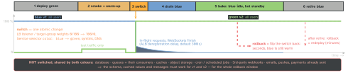

engineering · folio
In one line: Run two identical production environments: blue serves users, the new version is deployed to idle green, tested there with no user traffic, then one switch (load balancer, Service selector, DNS, symlink) moves all traffic at once. Blue stays up, warm, as the instant rollback — but only the stateless tier is doubled: the database, queues and side effects are shared, so rollback is instant only if v1 still works with what v2 wrote.
Download PDF Print view LaTeX source


How it works
- Two full stacks behind one entry point; the idle one is the target. Deploy to green, run migrations that are backward compatible (expand only), wait for readiness.
- Verify before users: smoke tests through a private route (preview Service, test listener, header rule), then warm-up: fill caches, JIT, connection pools; scale green to blue’s size, not the autoscaler’s minimum — a cold green at 100 % is an outage.
- Switch in one step. Existing TCP / HTTP/2 / WebSocket connections are not moved: they drain on blue (deregistration delay, preStop +
terminationGracePeriodSeconds, 30 s default in K8s). Endpoints are removed concurrently with SIGTERM — sleep inpreStop. - Bake: watch errors/latency on green; blue idle for the rollback window, then retired or reused as the next green. Cost: 2× the stateless tier for that window.
Where the switch lives
| switch | how | catch |
|---|---|---|
| load balancer | ALB rule, 2 target groups, weights 0–999 | no auto failover to the healthy group; sticky cookie AWSALBTG |
| K8s Service | patch spec.selector | long-lived conns stay on blue pods |
| DNS | swap record / weights | TTL + resolvers that ignore it: slow switch, slow rollback |
| symlink | ln -sfn releases/v2 current + reload | one host: not a second env |
Implementations
- Argo Rollouts
blueGreen:activeService+previewService; controller injects the ReplicaSet hash into Service selectors.autoPromotionEnabled(default true),prePromotionAnalysisgates the switch,postPromotionAnalysisfailure switches back,scaleDownDelaySeconds(default 30) keeps blue. - AWS: CodeDeploy ECS blue/green — two target groups, prod + optional test listener,
ECSAllAtOnce,ECSCanary10Percent5Minutes,ECSLinear10PercentEvery1Minutes(NLB: all-at-once only); EC2 = replacement ASG; Lambda = alias weights. Since July 2025 ECS nativeBLUE_GREENstrategy:bakeTimeInMinutes, lifecycle hooks, alarms.
Mobile — you cannot blue/green a binary
The installed app is the “blue” you can’t switch off, and the stores have no rollback. Equivalents: B/G the backend behind the app; ship both code paths and flip a remote flag (in-app B/G); route by an App-Version header; min-version gate as the last resort; RN: point an EAS Update channel at another branch (JS only).
Example — Kubernetes: the Service is the switch
apiVersion: v1
kind: Service # the ONLY thing that flips
metadata: { name: api }
spec:
selector: { app: api, color: blue } # -> green
ports: [{ port: 80, targetPort: 8080 }]
# 1 kubectl apply -f api-green.yaml # Deployment color: green
# 2 kubectl rollout status deploy/api-green
# 3 smoke: curl -f http://api-preview/healthz (preview Svc -> green)
# 4 switch:
# kubectl patch svc api -p '{"spec":{"selector":{"color":"green"}}}'
# 5 rollback = same patch with "blue" (blue pods still running)
# 6 after bake: kubectl scale deploy/api-blue --replicas=0Rollback — instant, with limits
- Schema: a v2 migration that drops/renames breaks v1 on rollback ⇒ only expand before the switch, contract after the bake.
- Data written by v2 (new format, cache entries, queue messages): v1 must read or ignore it.
- Side effects are not undone: emails, pushes, charges, webhooks — make them idempotent.
- Workers don’t follow the LB: both colours consume queues and run cron ⇒ double execution. Gate them by colour/flag; scale blue’s to 0.
- Sessions in memory are lost: shared store or a signed token.
Blue/green vs canary vs A/B
| exposure | best for | |
|---|---|---|
| blue/green | 0 → 100 %, whole env | fast whole-version rollback |
| canary | 1 → 100 %, metric-gated | small blast radius for unknown bugs |
| A/B | fixed split, weeks | measuring a product change |
Spinnaker calls it red/black. Combine: B/G envs + canary weights (CodeDeploy linear/canary).
Traps
- “Rollback is instant” — code yes; schema, data, emails no.
- Blue and green workers both eating the queue / cron.
- Cold green: 100 % onto empty caches, min-size autoscaler.
- DNS switch called “instant” — TTLs and caching resolvers.